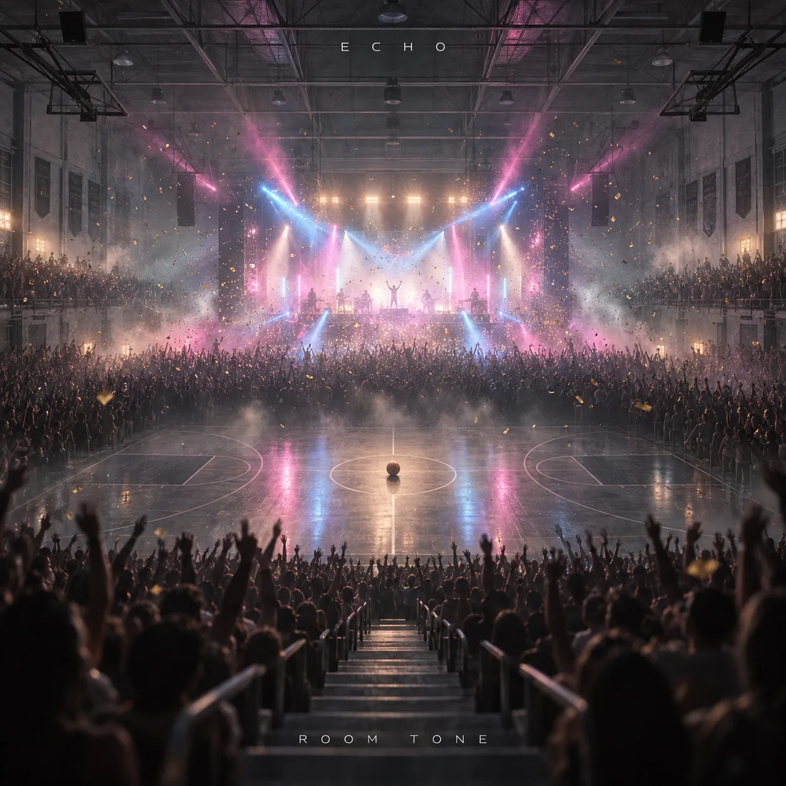
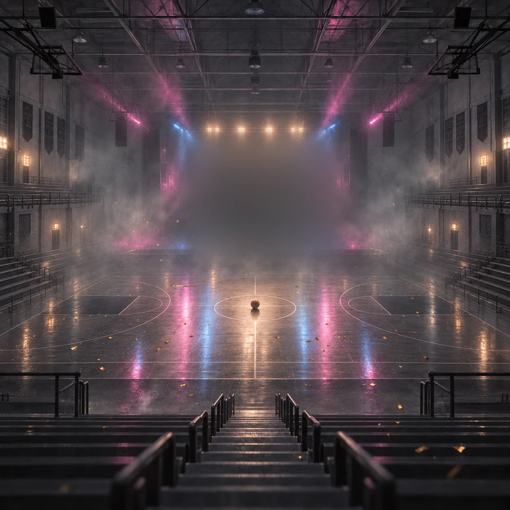
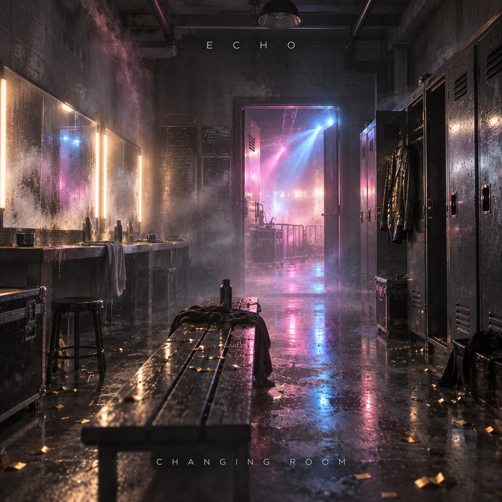
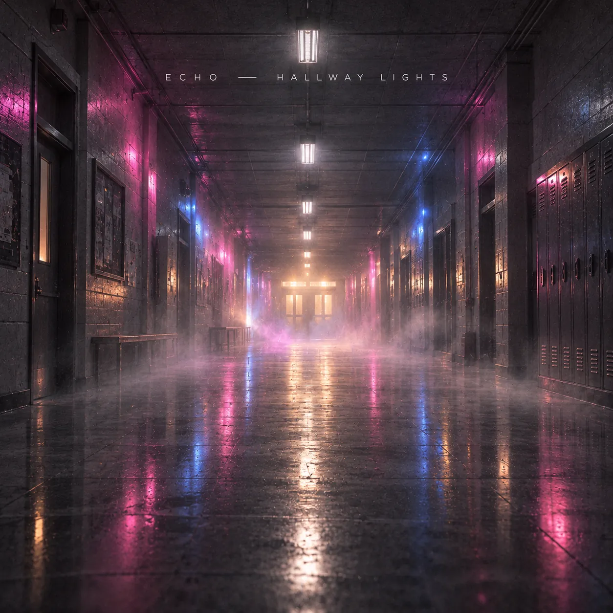
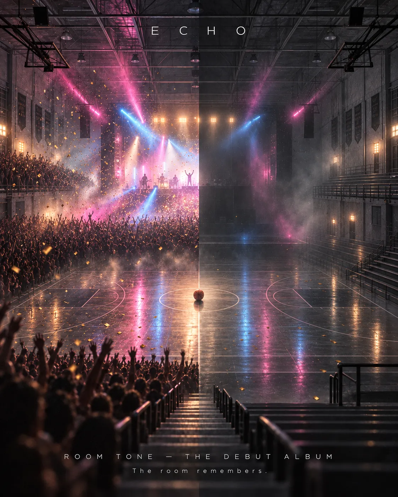

2022 · Lancaster
The only room they could be loud in
Four friends start rehearsing in a disused school gym — the only room the town would let them be loud in for free.


Room Tone · the debut album
The room remembers.
Every Echo song opens at full volume, hook first, as if the room is already packed. Then it strips away — the drums drop out, then the synths — until a single voice is left ringing, fading into reverb.
The story
2022 · Lancaster
Four friends start rehearsing in a disused school gym — the only room the town would let them be loud in for free.
The tail
They grew up hearing that hall ring with bouncing basketballs, every dribble and buzzer echoing off the walls long after the game ended. That fading tail became their obsession.
The swimming baths
A video of the band playing in an empty swimming baths, the whole building ringing back at them, spreads online.
The festival
On a small festival stage the crowd sings the final chorus so loudly that the band stops playing and lets them finish it.
The band
Lead vocals, piano
The soaring, fragile voice that carries the hooks.Guitar
Bright, rhythmic guitar — half of the rock heart.Bass
The low end the whole floor jumps to.Synths, production
Festival-sized drops and the long reverb tails.The debut album
The album plays the band's sound in reverse. It opens in a packed room at full volume and ends in an empty one.
Room tone is the faint sound a space makes when nobody is in it. Sound engineers record it so a scene can feel whole. The album asks what we leave behind in the places we've been — and its answer is the echo.
Written as the band's rooms got bigger and louder, it's their proof that a moment lasts. Even when the crowd has gone, something stays in the room.
Tracklist
Each song strips back a little more. Open any track for its lyrics.
Music video
Artwork



The sound
The early-2010s festival-pop moment, when rock bands and dance producers shared the same passion.
“Adventure of a Lifetime”
The sincere, communal chorus and bright rhythmic guitar — hooks written to be sung by a whole crowd.
“Burn”
An airy, reverb-heavy vocal over a big, simple chorus — the model for Echo's long vocal tails.
“Levels”
One melodic synth line carrying a whole festival, and the build-and-drop logic Echo's drops follow.
“Feel So Close”
A steady, driving beat with a wistful vocal on top — the sadness hiding inside the dance floor.
The room remembers.